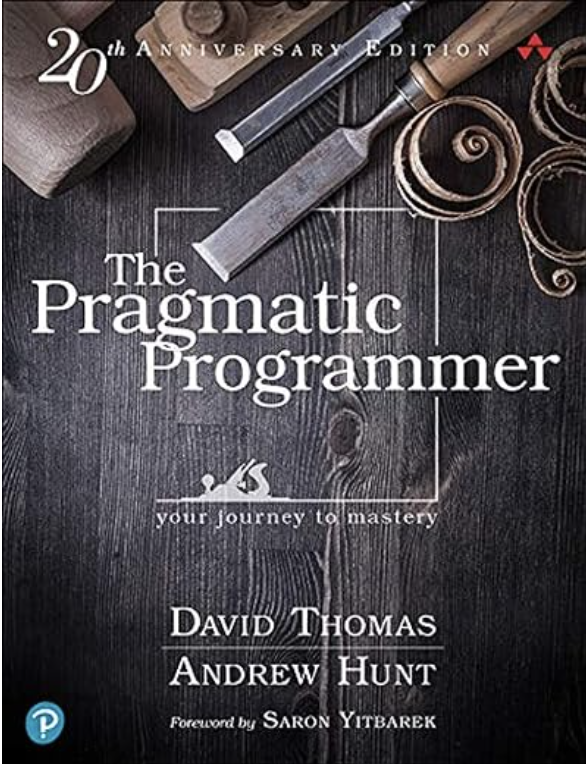
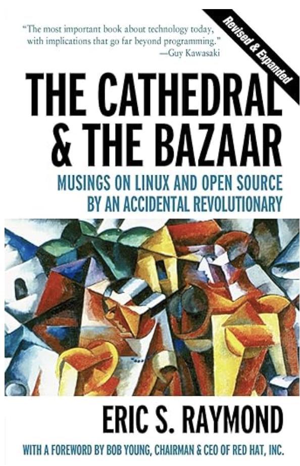
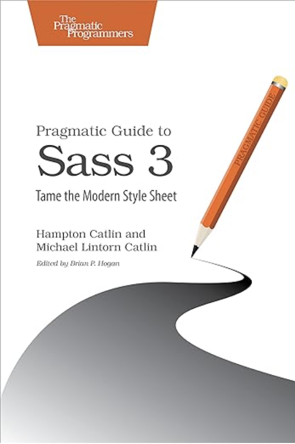
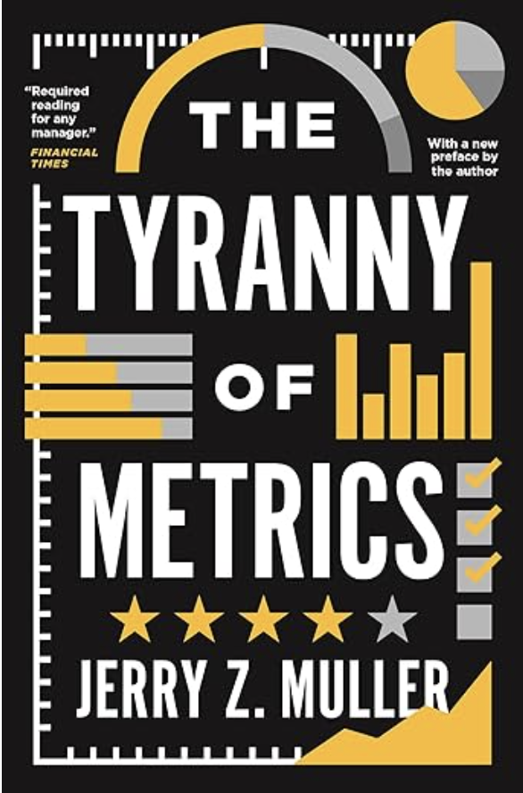
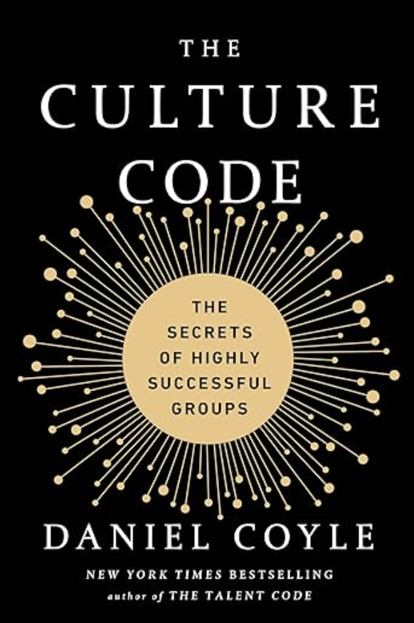

<--- Back
Hampton's CTO Bookshelf
As I've been lucky enough in my career to have a large number of interesting experiences and insights,
I'm often asked about books that influenced my thinking or that I recommend for people in the technology
industry. So, I decided to add this section to my website with a list of books that I recommend as required
reads for anyone interested in both thought leadership and people leadership.
That being said, I don't endorse or believe everything in these books. Many of them are woefully outdated,
but regardless, I feel it's like studying the classics for a writer. Learning about the thoughts, ideas, and
philosophical wranglings of our predecessors I believe is essential to understanding why we, as a profession,
think and believe certain things.
Technology Books
1975
A set of classic essays about the early insights in the software development world, where things don't work exactly how they do in other industries. Much of the terminology and description of the career sound odd today, but at it's core, it's an excellent primer in how to think about developer productivity. Also includes the essay 'No Silver Bullet' which has been a guiding concept in my entire career.
Link

1999
A seminal work in thinking about how a programmer can work with a business as requirements are discovered and partner in the creative process with the business. I remember in college, one adjunct professor told me 'agile is just theory for academics'– as his background had been in large enterprise businesses where requirements are set years in advance of anyone coding. Here, Dave Thomas and Andy Hunt walk you through exactly how you might use agile to deliver real business results.
Link

1999
Modern programmers take open source for granted– it's just a standard part of the industry at this point. At one point it was considered a radical, and frankly dangerous, idea. Those that thought that you could share code, raw uncopyrighted code, and that companies would be able to use it, was fantastical. There was also a battle going on between copyleft and copyright forces- turns out neither really won! Anyhow, this book was a turning point of taking open source as a radical idea, to something logical and understood.
Link

2016
Okay, don't buy this book, as it's wildly out of date and you'd do better just reading the docs these days, but you're crazy if you don't think I'm going to list my own damn book for my own damn language on my own damn list of technology books! Plus, if you send me one, I'll sign it and send it back to you- so see if any of these other author's will do that- ha!
Link
Business Books

2019
It's taken as unquestionable business truth these days that 'measure what matters' and that by measuring your business and employees with metrics is a best practice and required to be competitive. Frankly, it's a cult at this point. And it's not that I fully agree with this book- I don't actually- but it's a refreshing iconoclastic and thoughtful critique of modern metric madness.
Link

2018
One of the things that I'm most proud of in my career is that my teams have consistently had the highest morale in the companies I've worked for. One reason for that is that culture and vulnerability are incredibly important to me. And, when I read this book, I kept saying 'oh wow, yeah, I do that'- which is the most humble brag way ever to say that I felt like this was the book I would have written if you know... I had more ambition. Instead, I just tell people to read this one!
Link